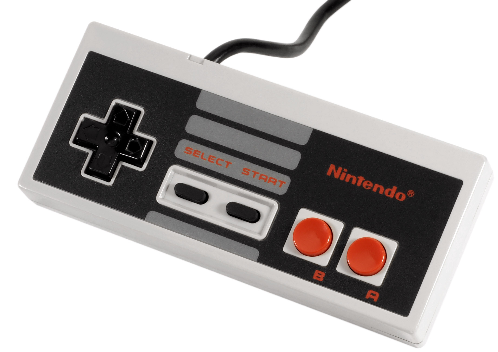

1983 NES Controller
Released with the NES, or Nintendo Entertainment System in 1983 as the official controller for the system, the aptly-named NES Controller takes on the form of a small, flat, wired brick. The iconic controller, which, in 2018, Nintendo re-released for use on their Nintendo Switch, features a 4-directional D-Pad, a start button, a select button, and an A and B button. Old controllers like this are prime examples that something doesn't have to be particularly fancy or feature-ridden, just do the job it was designed for well. Still, in the modern day, this Gem of a controller is quite prominent in the speedrunning community of Super Mario Bros, and within the community of Donkey Kong. (1981)
An Original NES Controller
Image Credit: Nintendo | Fandom